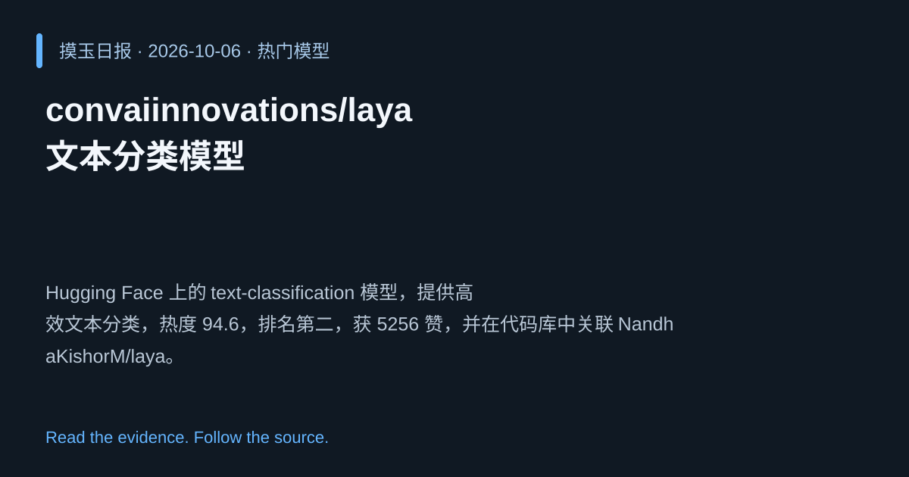

2026-10-06 · Asia/Shanghai · 热门模型 · #2
convaiinnovations/laya 文本分类模型
convaiinnovations/laya
Hugging Face 上的 text‑classification 模型，提供高效文本分类，热度 94.6，排名第二，获 5256 赞，并在代码库中关联 NandhaKishorM/laya。
为什么值得关注
大规模文本分类仍是企业核心需求，模型热度与点赞量表明其实用性。
- 高效单向前向完成文本分类
- 热度 94.6/100，社区点赞 5256 次
- 代码在 GitHub NandhaKishorM/laya，可直接复用

热度 94.6 / 100；排名与评分保留该期记录。